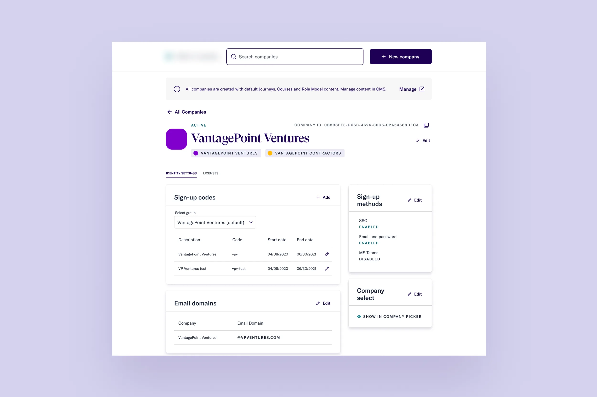
Thrive Global's admin tool is used by internal Customer Success, Customer Support, and Implementation teams to set up customer accounts and configure their access to the Thrive app. With a migration to a new identity provider (IdP) underway, the existing tool would be deprecated in 4–6 weeks.
Team: 1 designer (me), 1 product manager, 1 tech lead, 3 engineers.
The new identity provider changed relationships in the database schema. For example, Walmart Associates, Walmart Executives, and Walmart SSO shifted from a company value to a group value — a subtle but impactful change that affected how the UI needed to present data.
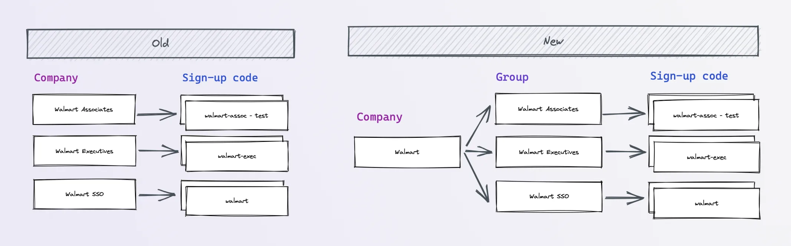
I interviewed users across Customer Success, Customer Support, and Implementation to surface their pain points. Two themes emerged: the need to better categorize information for findability, and the need to reduce slips and mistakes in high-stakes onboarding tasks.
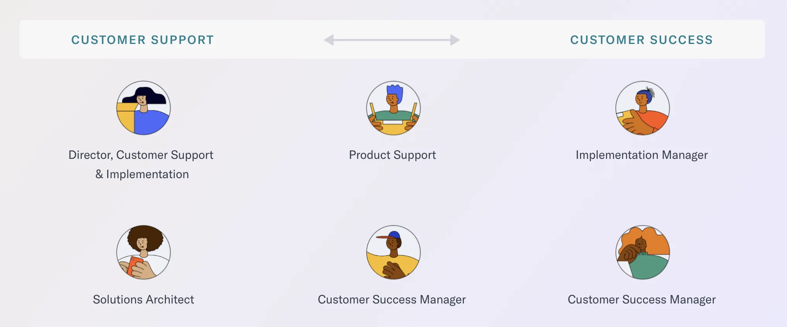
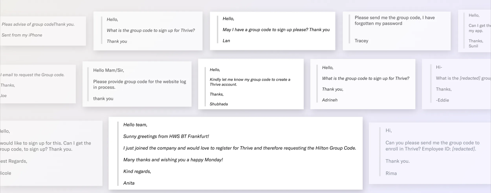
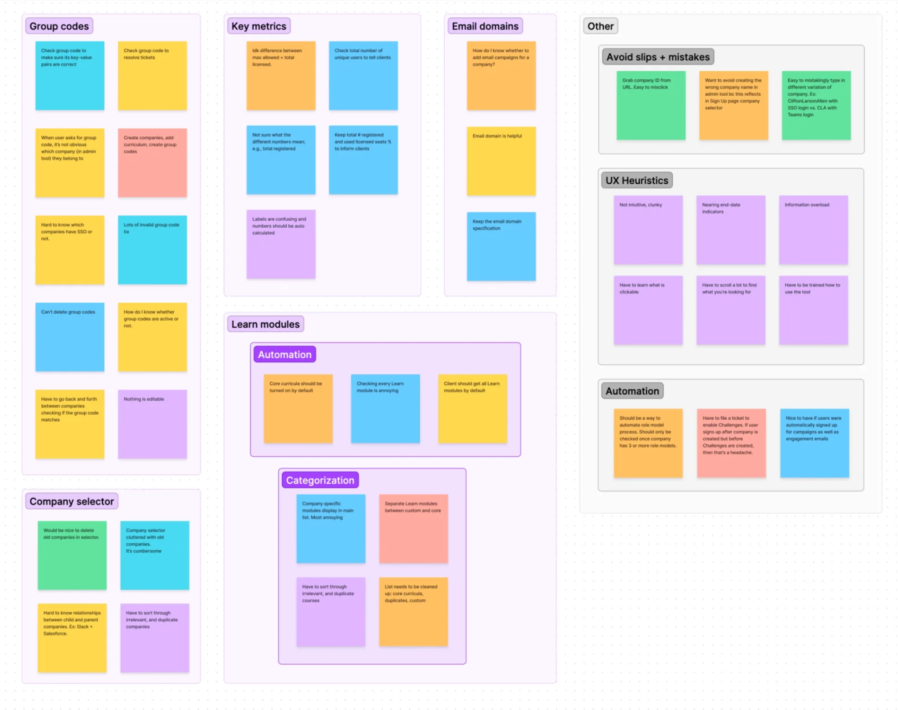
An affinity map of research notes surfaced recurring pain points around group codes, key metrics, email domains, and the company selector — along with themes about avoiding slips and mistakes, UX heuristics violations, and opportunities for automation.
I started with rough sketches to establish the new framework, looped in the team for feedback early, then moved to high-fidelity designs using real data.
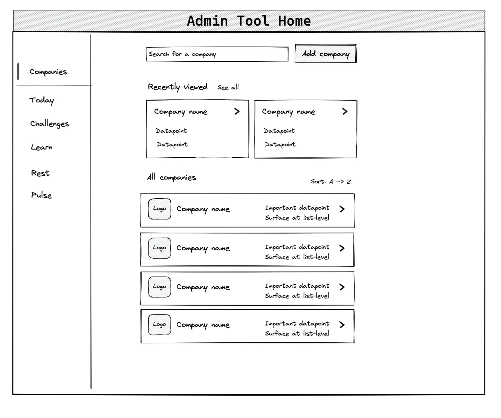
I created prototypes and had users complete their three most common tasks, measuring success rates to validate the direction.
Mid-project, new requirements arrived: new companies would now automatically receive default content via CMS, which changed what needed to live on the company detail page. I adapted the design — bringing Identity Settings forward and adding a dedicated Licenses tab — to keep the page useful without the removed content cards.
Users who forgot their group code accounted for 31%+ of support tickets. Added clear descriptions for group and sign-up codes so CS could identify and share them quickly.
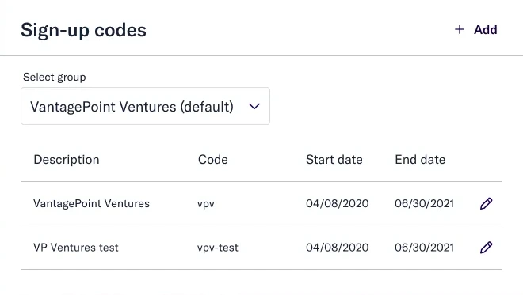
Users can now find "CliftonLarsonAllen" by typing "CLA." Cleaned, deduped data enables company relationships and new self-serve CRUD actions, eliminating requests to the identity team.
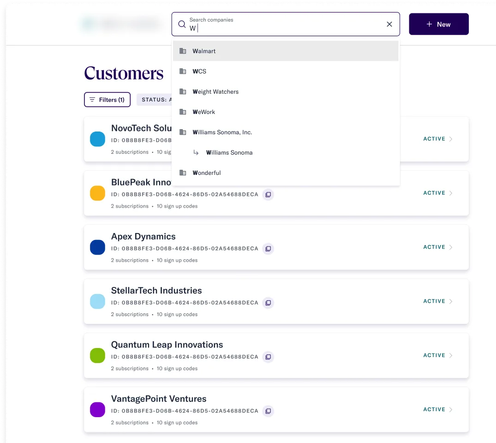
Implementation managers had to copy a customerID from the URL — slips were common. Added a persistent, fool-proof copy control to eliminate the error.
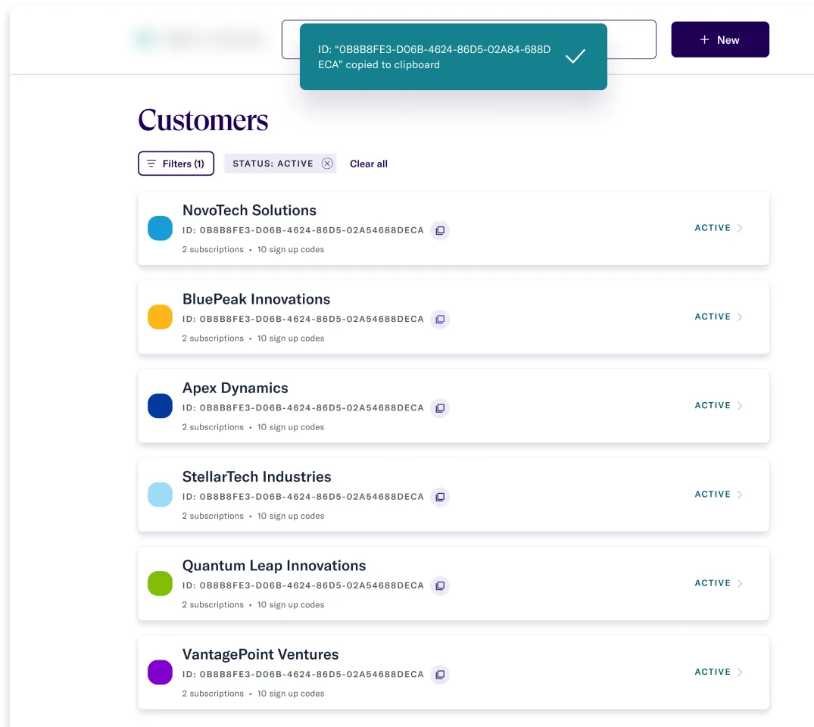
Embedded Google Analytics adoption data directly into the tool so CSMs could respond to customer usage requests without a separate system.
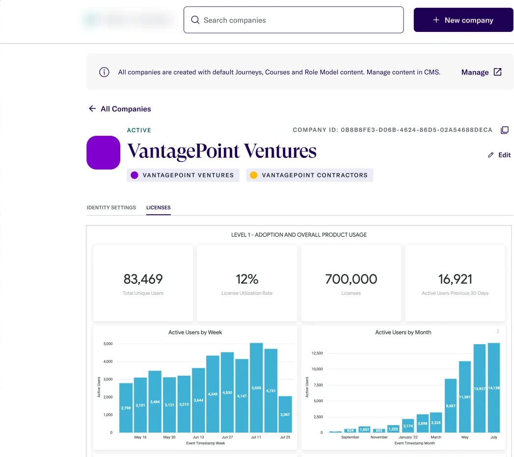
Built new components, rules, and states from the design system so future teams could add features without starting from scratch.
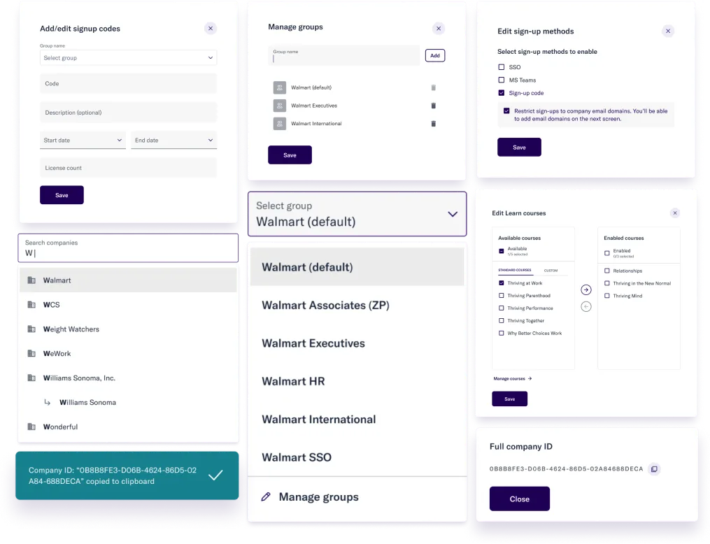
The new tool became the one-stop shop for managing Thrive for Call Centers configurations — keeping all existing functionality, handling the new IdP data model, and leaving the codebase in a state the next team could build on.
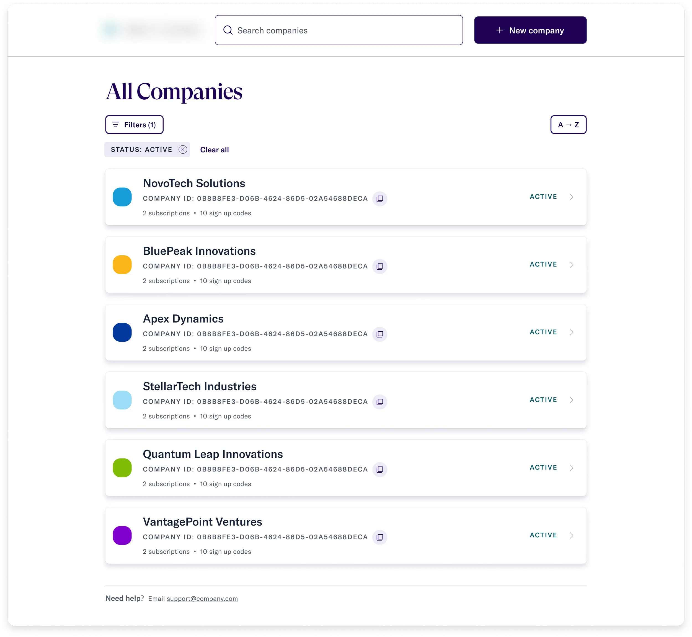
"I'm glad admin [dashboard] is looking great. When I joined, people wanted to use retool.com. My argument was that if we use the same stack for admin tool, we don't fragment people's training and skillset — and looking at your design, looks like it's working."
— Francois, UX Engineering
"Thanks for the thoughtful work you're doing on this tool, I really appreciate your passion for usability."
— Marie, Customer Support